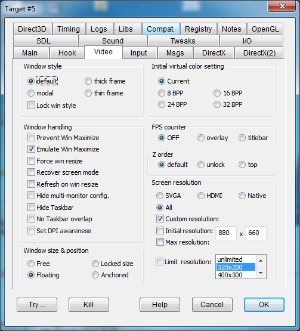

|
Default |
Initializes the game window with a title bar and resizeable borders. |
|
|
thick frame |
FIXWINFRAME |
To get overlapped window with thick border. |
|
modal |
MODALSTYLE |
A borderless and titleless modal style is chosen. |
|
thin frame |
FIXTHINFRAME |
To get overlapped window with thin border. |
|
Lock win style |
LOCKWINSTYLE |
Intercepts messages and calls that the program makes to itself to change its own windowstyle. |
|
Prevent Win Maximize |
PREVENTMAXIMIZE |
Some modern games don't actually go into fullscreen mode, but just make the window occupy the whole screen. This option intercepts Windows messages and user32 calls to avoid changing the window position and size to make it a fullscreen window. |
|
Emulate Win Maximize |
EMULATEMAXIMIZE |
To assign proper size & position to maximized windows. Useful for "Mig Alley". |
|
Force win resize |
FORCEWINRESIZE |
Experimental (and not working very well so far): should force window resizing messages to be processed so that the window can be resized by dragging its borders. |
|
Recover screen mode |
RECOVERSCREENMODE |
Sets the screen mode to registry default settings. In general, DxWnd intercepts any attempt to change display settings and prevents unwanted operations, but some programs still send display settings instructions before DxWnd can possibly intercept them (e.g. before the window is created and the windows hook is invoked). In this case, changing the display settings right afterward is the only possible solution. Try this when other options don't work. |
|
Refresh on win resize |
REFRESHONRESIZE |
Any decently written Windows application should take care of refreshing the screen primary surface when resized, and most fullscreen games do it. Some don't, because they were not supposed to ever be resized. This flag is forces a refresh (useful for the game Uprising). |
|
Hide multi-monitor config |
HIDEMULTIMONITOR |
Makes the program ignore multiple monitors in your system configuration, giving information about the primary monitor only. |
|
Hide Taskbar |
HIDETASKBAR |
Forces the Windows Taskbar to hide while a game is running. Upon game termination the taskbar will be recovered to its initial state, but in case of a game crash it is possible that the taskbar will keep staying hidden. In such a case, you can recover the taskbar status by using the menu command "Tools -> Desktop taskbar -> Show" |
|
No Taskbar overlap |
NOTASKBAROVERLAP |
To prevent window overlaping the desktop taskbar. |
|
Set DPI awareness |
SETDPIAWARE |
Sets DPI awareness for the hooked program. |
|
Current |
Does not change the video color mode. |
|
8 BPP |
Some games act as if you had switched the video mode to 8BPP before starting the game, making 8BPP emulation useless. This option tells the game that the desktop setting is in 8BPP mode already. |
|
16 BPP |
Same as above, but declaring a 16BPP setting. |
|
24 BPP |
Same as above, but declaring a 24BPP setting. |
|
32 BPP |
Same as above, but declaring a 32BPP setting. |
|
Free |
Allows you to move and resize the window freely, with commands from inside the application (through system calls) or from external user commands (such as grabbing the window border to stretch or move the window). |
|
Floating |
Move and resize operations are allowed only from user commands, but internal operations are intercepted and neutralized. |
|
Locked size |
It is only possible to move the window from user external commands, and the window can't be stretched or altered from internal operations. |
|
Anchored |
The window will remain fixed in its original position. |
|
OFF |
||
|
overlay |
SHOWFPSOVERLAY |
When checked, the FPS counter is drawn as an overlay of the program client area, in a corner of the screen and periodically and randomly moved to other cornes to avoid accidentally overlap an important screen region. |
|
titlebar |
SHOWFPS |
When checked, the FPS counter is appended to the window title. |
|
default |
||
|
unlock |
UNLOCKZORDER |
Some games repeatedly bring their window to the top of the Z-order, meaning that they insist on remaining on top of all other windows. This flag prevents the hooked game from updating its own Z-order. |
|
top |
LOCKTOPZORDER |
This option will try to keep the game window on top. |
Screen resolution affects the resolutions detected by the application. There is a choice of the following values:
|
SVGA |
SUPPORTSVGA |
The classic 4:3 screen resolutions starting from 320x200 up to 1280x800. |
|
HDMI |
SUPPORTHDMI |
The typical 16:9 resolutions from 640x360 up to 1980x1080. |
|
All |
SUPPORTSVGA|SUPPORTHDMI |
The flag enables the merging of all SVGA and HDMI modes. |
|
Monitor native modes |
NATIVERES |
Whatever resolution is returned from the video card. |
|
Custom resolution |
CUSTOMRES |
Add a custom resolution whose size is determined by the width and height given in the adjacent text fields. BEWARE: this video mode is virtually supported with all emulated color depths for the VGA or HDMI emulated video modes, but is not valid if the NATIVERES flag is selected. |
|
Initial resolution |
INITIALRES |
Set the initial screen resolution to the width and height given in the adjacent text fields. |
|
Max resolution |
MAXIMUMRES |
Set the maximum screen resolution to the width and height given in the adjacent text fields. |
|
Limit resolution |
LIMITSCREENRES |
Disables any resolution higher than the selected value. By default, the choice is "unlimited", that means no resolution is disabled. |
Note that 320x200 resolution is typically no longer supported, but it is not a problem to emulate it in a window, and this resolution is necessary to run some older games.
The actual list of the supported video modes depends from sevral factors. The video resolutions in emulated modes come from the selected flags (SVGA or HDMI or All) plus, when set, the additional custom resolution. In case of non emulated modes the custom resolution is not considered, since it is not a "real" one.
Finally, in both cases, the list is trimmed eliminating all resolution that exceed the limits that are set, if any.
For what concerns color depths, then, the emulated modes for 2D ddraw calls include support for 8, 16(RGB555 and RGB565), 24 and 32 bit color depths. 3D D3D functions instead only support native color depths and, on Win10, the possibility to emulate 16 bit colors in D3D8.